CODING AGENTS AS PIXEL WORLD MODELS
traex/DeepSeek-V4.1-Flash · 0099
点击播放 · 原生 RGB 像素
逐轮保存的候选
回放视频、检查图与代码变化。
每份候选均可单独播放。实际图片检查记录在下方工具轨迹中。
候选 01播放与检查图
点击播放 · 原生 RGB 像素
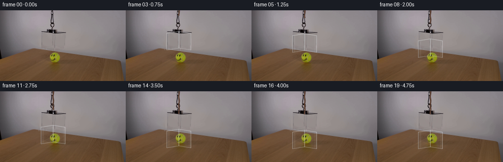
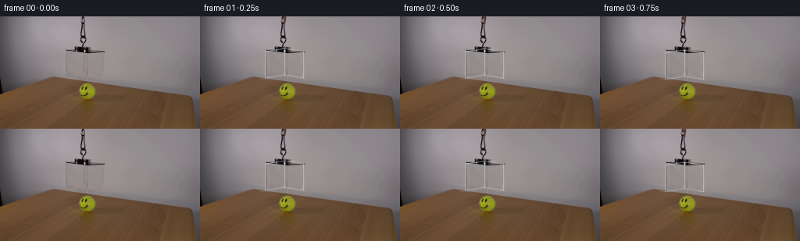
展开代码变化
--- 上一保存版本
+++ 本次保存版本
@@ -0,0 +1,280 @@
+from pathlib import Path
+
+import numpy as np
+from PIL import Image, ImageDraw
+
+import artifact_io
+
+
+HERE = Path(__file__).resolve().parent
+W, H, N = 256, 144, 20
+SS = 4
+
+
+def smoothstep(value):
+ value = np.clip(value, 0.0, 1.0)
+ return value * value * (3.0 - 2.0 * value)
+
+
+def make_clean_plate(source):
+ """Fit the smooth studio wall behind the original suspended rig."""
+ plate = source.copy()
+ yy, xx = np.mgrid[0:H, 0:W]
+ region = (yy < 80) & (xx >= 48) & (xx <= 176)
+ masked = np.zeros((H, W), dtype=bool)
+ masked[0:43, 98:117] = True
+ masked[40:82, 80:139] = True
+
+ samples = region & ~masked
+ sx = xx[samples].astype(np.float64)
+ sy = yy[samples].astype(np.float64)
+ design = np.column_stack(
+ [
+ np.ones_like(sx),
+ sx,
+ sy,
+ sx * sy,
+ sx * sx,
+ sy * sy,
+ sx * sx * sy,
+ sx * sy * sy,
+ ]
+ )
+
+ fill_mask = np.zeros((H, W), dtype=bool)
+ fill_mask[0:81, 78:141] = True
+ fy, fx = np.nonzero(fill_mask)
+ fdesign = np.column_stack(
+ [
+ np.ones_like(fx, dtype=np.float64),
+ fx,
+ fy,
+ fx * fy,
+ fx * fx,
+ fy * fy,
+ fx * fx * fy,
+ fx * fy * fy,
+ ]
+ )
+
+ for channel in range(3):
+ coef, *_ = np.linalg.lstsq(design, source[..., channel][samples], rcond=None)
+ fitted = fdesign @ coef
+ plate[fy, fx, channel] = np.clip(np.rint(fitted), 0, 255).astype(np.uint8)
+
+ # Match the fitted wall softly at the edge of the reconstruction.
+ edge = np.zeros((H, W), dtype=np.float32)
+ edge[0:81, 78:141] = 1.0
+ for _ in range(3):
+ edge = (
+ np.roll(edge, 1, 0)
+ + np.roll(edge, -1, 0)
+ + np.roll(edge, 1, 1)
+ + np.roll(edge, -1, 1)
+ ) * 0.25
+ edge = np.clip(edge, 0.0, 1.0)[..., None]
+ plate = np.clip(
+ plate.astype(np.float32) * (1.0 - edge) + source.astype(np.float32) * edge,
+ 0,
+ 255,
+ ).astype(np.uint8)
+ return plate
+
+
+def hardware_layer(source, clean):
+ """Extract the opaque clamp, carabiner, cord end, and acrylic lid."""
+ yy, xx = np.mgrid[0:H, 0:W]
+ region = (xx >= 79) & (xx <= 138) & (yy <= 48)
+ difference = np.max(
+ np.abs(source.astype(np.int16) - clean.astype(np.int16)), axis=2
+ ).astype(np.float32)
+ alpha = np.clip((difference - 3.0) / 11.0, 0.0, 1.0)
+ alpha *= region
+ alpha *= (yy < 40) | ((xx >= 83) & (xx <= 134))
+ alpha = np.where(alpha > 0.08, alpha, 0.0)
+ return source.copy(), alpha.astype(np.float32)
+
+
+def polygon_mask(points, scale=SS):
+ image = Image.new("L", (W * scale, H * scale), 0)
+ draw = ImageDraw.Draw(image)
+ draw.polygon([(int(x * scale), int(y * scale)) for x, y in points], fill=255)
+ return np.asarray(image.resize((W, H), Image.Resampling.LANCZOS), dtype=np.float32) / 255.0
+
+
+def line_mask(points, width=1.0, scale=SS):
+ image = Image.new("L", (W * scale, H * scale), 0)
+ draw = ImageDraw.Draw(image)
+ draw.line(
+ [(int(x * scale), int(y * scale)) for x, y in points],
+ fill=255,
+ width=max(1, int(round(width * scale))),
+ joint="curve",
+ )
+ return np.asarray(image.resize((W, H), Image.Resampling.LANCZOS), dtype=np.float32) / 255.0
+
+
+def composite_color(frame, mask, color, opacity):
+ if mask.max() <= 0:
+ return frame
+ alpha = (mask * opacity)[..., None]
+ rgb = np.asarray(color, dtype=np.float32)
+ return frame * (1.0 - alpha) + rgb * alpha
+
+
+def composite_image(frame, image, alpha, dx=0, dy=0):
+ out = frame.copy()
+ if dx == 0 and dy == 0:
+ alpha = alpha
+ rgb = image
+ return out * (1.0 - alpha[..., None]) + rgb * alpha[..., None]
+
+ shifted_rgb = np.zeros_like(image, dtype=np.float32)
+ shifted_alpha = np.zeros_like(alpha, dtype=np.float32)
+ src_y0, src_y1 = max(0, -dy), min(H, H - dy)
+ src_x0, src_x1 = max(0, -dx), min(W, W - dx)
+ if src_y1 > src_y0 and src_x1 > src_x0:
+ dst_y0, dst_y1 = src_y0 + dy, src_y1 + dy
+ dst_x0, dst_x1 = src_x0 + dx, src_x1 + dx
+ shifted_rgb[dst_y0:dst_y1, dst_x0:dst_x1] = image[
+ src_y0:src_y1, src_x0:src_x1
+ ]
+ shifted_alpha[dst_y0:dst_y1, dst_x0:dst_x1] = alpha[
+ src_y0:src_y1, src_x0:src_x1
+ ]
+ return out * (1.0 - shifted_alpha[..., None]) + shifted_rgb * shifted_alpha[..., None]
+
+
+def render_glass_box(frame, dy):
+ top = dy
+ left = [
+ (83.5, 45.0 + top),
+ (108.0, 41.0 + top),
+ (108.0, 75.0 + top),
+ (83.5, 79.0 + top),
+ ]
+ front = [
+ (108.0, 41.0 + top),
+ (132.5, 45.0 + top),
+ (132.5, 79.0 + top),
+ (108.0, 75.0 + top),
+ ]
+
+ left_mask = polygon_mask(left)
+ front_mask = polygon_mask(front)
+
+ # The two faces catch slightly different cool studio reflections.
+ frame = composite_color(frame, left_mask, (111, 119, 126), 0.045)
+ frame = composite_color(frame, front_mask, (180, 190, 197), 0.032)
+
+ # Broad vertical reflection bands preserve the look of the source acrylic.
+ band_left = polygon_mask(
+ [
+ (86.0, 46.0 + top),
+ (89.0, 45.5 + top),
+ (89.0, 78.0 + top),
+ (86.0, 78.8 + top),
+ ]
+ )
+ band_center = polygon_mask(
+ [
+ (106.3, 42.0 + top),
+ (108.0, 41.7 + top),
+ (108.0, 75.2 + top),
+ (106.3, 75.5 + top),
+ ]
+ )
+ band_right = polygon_mask(
+ [
+ (128.0, 44.3 + top),
+ (131.0, 44.8 + top),
+ (131.0, 78.4 + top),
+ (128.0, 77.8 + top),
+ ]
+ )
+ frame = composite_color(frame, band_left, (232, 238, 242), 0.055)
+ frame = composite_color(frame, band_center, (67, 73, 80), 0.065)
+ frame = composite_color(frame, band_right, (245, 248, 249), 0.045)
+
+ # Fine, bright edges define the transparent cuboid without hiding the ball.
+ edge_sets = [
+ ([(83.5, 45.0 + top), (108.0, 41.0 + top), (132.5, 45.0 + top)], 0.72),
+ ([(83.5, 79.0 + top), (108.0, 75.0 + top), (132.5, 79.0 + top)], 0.52),
+ ([(83.5, 45.0 + top), (83.5, 79.0 + top)], 0.48),
+ ([(108.0, 41.0 + top), (108.0, 75.0 + top)], 0.62),
+ ([(132.5, 45.0 + top), (132.5, 79.0 + top)], 0.58),
+ ]
+ for points, opacity in edge_sets:
+ frame = composite_color(frame, line_mask(points, 0.8), (238, 242, 244), opacity)
+
+ # A darker reflection just inside the left edge gives the glass thickness.
+ frame = composite_color(
+ frame,
+ line_mask([(84.7, 45.5 + top), (84.7, 79.0 + top)], 0.7),
+ (78, 82, 87),
+ 0.34,
+ )
+ return frame
+
+
+def render_cord(frame, dy):
+ yy, xx = np.mgrid[0:H, 0:W]
+ active = yy < (dy + 9)
+ center = 108.0 + 0.55 * np.sin((yy + 3.0) * 0.36)
+ distance = np.abs(xx - center)
+ core = np.clip(1.7 - distance, 0.0, 1.0) * active
+ glint = np.clip(1.0 - np.abs(xx - (center - 0.6)), 0.0, 1.0) * active
+ frame = composite_color(frame, core, (70, 47, 38), 0.92)
+ frame = composite_color(frame, glint, (157, 102, 67), 0.52)
+ return frame
+
+
+def render_contact_shadow(frame, dy):
+ if dy < 18:
+ return frame
+ strength = smoothstep((dy - 18.0) / 20.0)
+ yy, xx = np.mgrid[0:H, 0:W]
+ ellipse = ((xx - 108.0) / 26.0) ** 2 + ((yy - 116.0) / 3.2) ** 2
+ shadow = np.clip(1.0 - ellipse, 0.0, 1.0) ** 1.7
+ shadow *= strength * 0.075
+ return frame * (1.0 - shadow[..., None]) + np.array([45, 28, 18]) * shadow[..., None]
+
+
+def generate():
+ source = np.asarray(Image.open(HERE / "first_frame.png").convert("RGB"), dtype=np.uint8)
+ assert source.shape == (H, W, 3)
+
+ clean = make_clean_plate(source)
+ hardware, hardware_alpha = hardware_layer(source, clean)
+
+ frames = []
+ for index in range(N):
+ if index == 0:
+ frames.append(source.copy())
+ continue
+
+ progress = smoothstep((index - 1.0) / 15.0)
+ dy = 38.0 * progress
+
+ frame = clean.astype(np.float32)
+ frame = render_cord(frame, dy)
+ frame = render_glass_box(frame, dy)
+ frame = render_contact_shadow(frame, dy)
+ frame = composite_image(
+ frame,
+ hardware.astype(np.float32),
+ hardware_alpha,
+ dx=0,
+ dy=int(round(dy)),
+ )
+ frames.append(np.clip(np.rint(frame), 0, 255).astype(np.uint8))
+
+ frames = np.stack(frames)
+ assert frames.shape == (N, H, W, 3)
+ assert frames.dtype == np.uint8
+ assert np.array_equal(frames[0], source)
+ artifact_io.save(frames, HERE)
+
+
+if __name__ == "__main__":
+ generate()
候选 02播放与检查图
点击播放 · 原生 RGB 像素

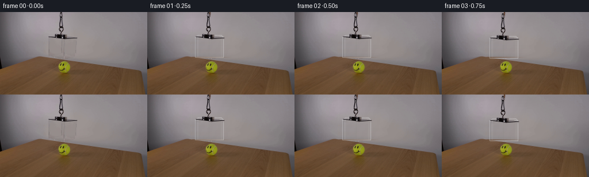
展开代码变化
--- 上一保存版本
+++ 本次保存版本
@@ -17,66 +17,25 @@
def make_clean_plate(source):
- """Fit the smooth studio wall behind the original suspended rig."""
+ """Rebuild the smooth studio wall behind the original suspended rig."""
plate = source.copy()
- yy, xx = np.mgrid[0:H, 0:W]
- region = (yy < 80) & (xx >= 48) & (xx <= 176)
- masked = np.zeros((H, W), dtype=bool)
- masked[0:43, 98:117] = True
- masked[40:82, 80:139] = True
-
- samples = region & ~masked
- sx = xx[samples].astype(np.float64)
- sy = yy[samples].astype(np.float64)
- design = np.column_stack(
- [
- np.ones_like(sx),
- sx,
- sy,
- sx * sy,
- sx * sx,
- sy * sy,
- sx * sx * sy,
- sx * sy * sy,
- ]
- )
-
- fill_mask = np.zeros((H, W), dtype=bool)
- fill_mask[0:81, 78:141] = True
- fy, fx = np.nonzero(fill_mask)
- fdesign = np.column_stack(
- [
- np.ones_like(fx, dtype=np.float64),
- fx,
- fy,
- fx * fy,
- fx * fx,
- fy * fy,
- fx * fx * fy,
- fx * fy * fy,
- ]
- )
-
- for channel in range(3):
- coef, *_ = np.linalg.lstsq(design, source[..., channel][samples], rcond=None)
- fitted = fdesign @ coef
- plate[fy, fx, channel] = np.clip(np.rint(fitted), 0, 255).astype(np.uint8)
-
- # Match the fitted wall softly at the edge of the reconstruction.
- edge = np.zeros((H, W), dtype=np.float32)
- edge[0:81, 78:141] = 1.0
- for _ in range(3):
- edge = (
- np.roll(edge, 1, 0)
- + np.roll(edge, -1, 0)
- + np.roll(edge, 1, 1)
- + np.roll(edge, -1, 1)
- ) * 0.25
- edge = np.clip(edge, 0.0, 1.0)[..., None]
- plate = np.clip(
- plate.astype(np.float32) * (1.0 - edge) + source.astype(np.float32) * edge,
- 0,
- 255,
+ # The wall is smooth and the rig occupies a narrow central column. Sampling
+ # both sides of that column keeps the reconstructed gradient continuous.
+ for y in range(80):
+ left = np.median(source[max(0, y - 1) : y + 2, 73:79], axis=(0, 1))
+ right = np.median(source[max(0, y - 1) : y + 2, 141:147], axis=(0, 1))
+ amount = np.linspace(0.0, 1.0, 70, dtype=np.float32)[:, None]
+ row = left * (1.0 - amount) + right * amount
+ plate[y, 78:148] = np.clip(np.rint(row), 0, 255).astype(np.uint8)
+
+ # A tiny low-frequency grain break-up avoids a mathematically flat patch.
+ yy, xx = np.mgrid[0:80, 78:148]
+ grain = (
+ np.sin(xx * 0.39 + yy * 0.21)
+ + 0.55 * np.sin(xx * 0.17 - yy * 0.43)
+ ) * 0.32
+ plate[0:80, 78:148] = np.clip(
+ plate[0:80, 78:148].astype(np.float32) + grain[..., None], 0, 255
).astype(np.uint8)
return plate
@@ -147,72 +106,69 @@
def render_glass_box(frame, dy):
top = dy
- left = [
- (83.5, 45.0 + top),
- (108.0, 41.0 + top),
- (108.0, 75.0 + top),
+ front = [
+ (83.5, 44.0 + top),
+ (132.5, 44.0 + top),
+ (132.5, 79.0 + top),
(83.5, 79.0 + top),
]
- front = [
- (108.0, 41.0 + top),
- (132.5, 45.0 + top),
- (132.5, 79.0 + top),
- (108.0, 75.0 + top),
+ top_panel = [
+ (88.0, 40.5 + top),
+ (129.0, 40.5 + top),
+ (132.5, 44.0 + top),
+ (83.5, 44.0 + top),
]
- left_mask = polygon_mask(left)
front_mask = polygon_mask(front)
-
- # The two faces catch slightly different cool studio reflections.
- frame = composite_color(frame, left_mask, (111, 119, 126), 0.045)
- frame = composite_color(frame, front_mask, (180, 190, 197), 0.032)
+ top_mask = polygon_mask(top_panel)
+
+ # The acrylic catches cool studio reflections while remaining see-through.
+ frame = composite_color(frame, front_mask, (185, 194, 200), 0.028)
+ frame = composite_color(frame, top_mask, (222, 228, 232), 0.045)
# Broad vertical reflection bands preserve the look of the source acrylic.
band_left = polygon_mask(
- [
- (86.0, 46.0 + top),
- (89.0, 45.5 + top),
- (89.0, 78.0 + top),
- (86.0, 78.8 + top),
- ]
+ [(86.0, 45.0 + top), (89.0, 45.0 + top), (89.0, 78.0 + top), (86.0, 78.0 + top)]
)
band_center = polygon_mask(
[
- (106.3, 42.0 + top),
- (108.0, 41.7 + top),
- (108.0, 75.2 + top),
- (106.3, 75.5 + top),
+ (106.8, 44.5 + top),
+ (108.2, 44.5 + top),
+ (108.2, 78.6 + top),
+ (106.8, 78.6 + top),
]
)
band_right = polygon_mask(
[
- (128.0, 44.3 + top),
- (131.0, 44.8 + top),
- (131.0, 78.4 + top),
- (128.0, 77.8 + top),
+ (128.0, 44.5 + top),
+ (131.0, 44.5 + top),
+ (131.0, 78.5 + top),
+ (128.0, 78.5 + top),
]
)
frame = composite_color(frame, band_left, (232, 238, 242), 0.055)
- frame = composite_color(frame, band_center, (67, 73, 80), 0.065)
- frame = composite_color(frame, band_right, (245, 248, 249), 0.045)
+ frame = composite_color(frame, band_center, (76, 82, 88), 0.035)
+ frame = composite_color(frame, band_right, (245, 248, 249), 0.038)
# Fine, bright edges define the transparent cuboid without hiding the ball.
edge_sets = [
- ([(83.5, 45.0 + top), (108.0, 41.0 + top), (132.5, 45.0 + top)], 0.72),
- ([(83.5, 79.0 + top), (108.0, 75.0 + top), (132.5, 79.0 + top)], 0.52),
- ([(83.5, 45.0 + top), (83.5, 79.0 + top)], 0.48),
- ([(108.0, 41.0 + top), (108.0, 75.0 + top)], 0.62),
- ([(132.5, 45.0 + top), (132.5, 79.0 + top)], 0.58),
+ ([(88.0, 40.5 + top), (129.0, 40.5 + top)], 0.48),
+ ([(83.5, 44.0 + top), (132.5, 44.0 + top)], 0.58),
+ ([(83.5, 79.0 + top), (132.5, 79.0 + top)], 0.46),
+ ([(83.5, 44.0 + top), (83.5, 79.0 + top)], 0.42),
+ ([(132.5, 44.0 + top), (132.5, 79.0 + top)], 0.46),
+ ([(88.0, 40.5 + top), (83.5, 44.0 + top)], 0.34),
+ ([(129.0, 40.5 + top), (132.5, 44.0 + top)], 0.34),
]
for points, opacity in edge_sets:
- frame = composite_color(frame, line_mask(points, 0.8), (238, 242, 244), opacity)
+ frame = composite_color(frame, line_mask(points, 0.75), (238, 242, 244), opacity)
# A darker reflection just inside the left edge gives the glass thickness.
frame = composite_color(
frame,
- line_mask([(84.7, 45.5 + top), (84.7, 79.0 + top)], 0.7),
+ line_mask([(84.7, 44.7 + top), (84.7, 78.7 + top)], 0.65),
(78, 82, 87),
- 0.34,
+ 0.28,
)
return frame
候选 03播放与检查图
点击播放 · 原生 RGB 像素
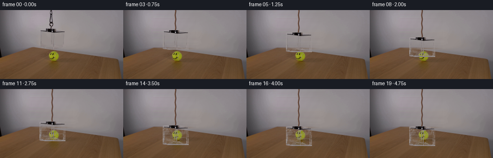
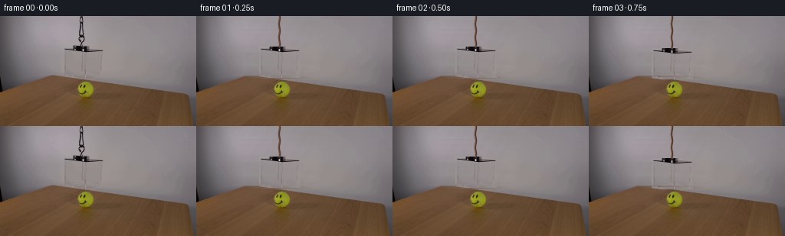
展开代码变化
--- 上一保存版本
+++ 本次保存版本
@@ -19,46 +19,37 @@
def make_clean_plate(source):
"""Rebuild the smooth studio wall behind the original suspended rig."""
plate = source.copy()
- # The wall is smooth and the rig occupies a narrow central column. Sampling
- # both sides of that column keeps the reconstructed gradient continuous.
- for y in range(80):
- left = np.median(source[max(0, y - 1) : y + 2, 73:79], axis=(0, 1))
- right = np.median(source[max(0, y - 1) : y + 2, 141:147], axis=(0, 1))
- amount = np.linspace(0.0, 1.0, 70, dtype=np.float32)[:, None]
+ # Interpolate across a generous central strip so the repair joins the
+ # studio wall without a visible rectangular edge.
+ for y in range(82):
+ left = source[y, 63].astype(np.float32)
+ right = source[y, 153].astype(np.float32)
+ amount = np.linspace(0.0, 1.0, 88, dtype=np.float32)[:, None]
row = left * (1.0 - amount) + right * amount
- plate[y, 78:148] = np.clip(np.rint(row), 0, 255).astype(np.uint8)
+ plate[y, 64:152] = np.clip(np.rint(row), 0, 255).astype(np.uint8)
- # A tiny low-frequency grain break-up avoids a mathematically flat patch.
- yy, xx = np.mgrid[0:80, 78:148]
+ # Preserve a trace of the source grain while suppressing the old rig.
grain = (
- np.sin(xx * 0.39 + yy * 0.21)
- + 0.55 * np.sin(xx * 0.17 - yy * 0.43)
- ) * 0.32
- plate[0:80, 78:148] = np.clip(
- plate[0:80, 78:148].astype(np.float32) + grain[..., None], 0, 255
+ np.sin(np.arange(W) * 0.37 + np.arange(82)[:, None] * 0.23)
+ + 0.5 * np.sin(np.arange(W) * 0.19 - np.arange(82)[:, None] * 0.41)
+ ) * 0.18
+ plate[0:82, 64:152] = np.clip(
+ plate[0:82, 64:152].astype(np.float32) + grain[:, 64:152, None], 0, 255
).astype(np.uint8)
return plate
-def hardware_layer(source, clean):
- """Extract the opaque clamp, carabiner, cord end, and acrylic lid."""
+def difference_alpha(source, clean, box, threshold=2.5, spread=9.0):
yy, xx = np.mgrid[0:H, 0:W]
- region = (xx >= 79) & (xx <= 138) & (yy <= 48)
difference = np.max(
np.abs(source.astype(np.int16) - clean.astype(np.int16)), axis=2
).astype(np.float32)
- alpha = np.clip((difference - 3.0) / 11.0, 0.0, 1.0)
- alpha *= region
- alpha *= (yy < 40) | ((xx >= 83) & (xx <= 134))
- alpha = np.where(alpha > 0.08, alpha, 0.0)
+ y0, y1, x0, x1 = box
+ region = (xx >= x0) & (xx <= x1) & (yy >= y0) & (yy <= y1)
+ alpha = np.clip((difference - threshold) / spread, 0.0, 1.0)
+ alpha = np.where(region, alpha, 0.0)
+ alpha = np.where(alpha > 0.06, alpha, 0.0)
return source.copy(), alpha.astype(np.float32)
-
-
-def polygon_mask(points, scale=SS):
- image = Image.new("L", (W * scale, H * scale), 0)
- draw = ImageDraw.Draw(image)
- draw.polygon([(int(x * scale), int(y * scale)) for x, y in points], fill=255)
- return np.asarray(image.resize((W, H), Image.Resampling.LANCZOS), dtype=np.float32) / 255.0
def line_mask(points, width=1.0, scale=SS):
@@ -104,78 +95,9 @@
return out * (1.0 - shifted_alpha[..., None]) + shifted_rgb * shifted_alpha[..., None]
-def render_glass_box(frame, dy):
- top = dy
- front = [
- (83.5, 44.0 + top),
- (132.5, 44.0 + top),
- (132.5, 79.0 + top),
- (83.5, 79.0 + top),
- ]
- top_panel = [
- (88.0, 40.5 + top),
- (129.0, 40.5 + top),
- (132.5, 44.0 + top),
- (83.5, 44.0 + top),
- ]
-
- front_mask = polygon_mask(front)
- top_mask = polygon_mask(top_panel)
-
- # The acrylic catches cool studio reflections while remaining see-through.
- frame = composite_color(frame, front_mask, (185, 194, 200), 0.028)
- frame = composite_color(frame, top_mask, (222, 228, 232), 0.045)
-
- # Broad vertical reflection bands preserve the look of the source acrylic.
- band_left = polygon_mask(
- [(86.0, 45.0 + top), (89.0, 45.0 + top), (89.0, 78.0 + top), (86.0, 78.0 + top)]
- )
- band_center = polygon_mask(
- [
- (106.8, 44.5 + top),
- (108.2, 44.5 + top),
- (108.2, 78.6 + top),
- (106.8, 78.6 + top),
- ]
- )
- band_right = polygon_mask(
- [
- (128.0, 44.5 + top),
- (131.0, 44.5 + top),
- (131.0, 78.5 + top),
- (128.0, 78.5 + top),
- ]
- )
- frame = composite_color(frame, band_left, (232, 238, 242), 0.055)
- frame = composite_color(frame, band_center, (76, 82, 88), 0.035)
- frame = composite_color(frame, band_right, (245, 248, 249), 0.038)
-
- # Fine, bright edges define the transparent cuboid without hiding the ball.
- edge_sets = [
- ([(88.0, 40.5 + top), (129.0, 40.5 + top)], 0.48),
- ([(83.5, 44.0 + top), (132.5, 44.0 + top)], 0.58),
- ([(83.5, 79.0 + top), (132.5, 79.0 + top)], 0.46),
- ([(83.5, 44.0 + top), (83.5, 79.0 + top)], 0.42),
- ([(132.5, 44.0 + top), (132.5, 79.0 + top)], 0.46),
- ([(88.0, 40.5 + top), (83.5, 44.0 + top)], 0.34),
- ([(129.0, 40.5 + top), (132.5, 44.0 + top)], 0.34),
- ]
- for points, opacity in edge_sets:
- frame = composite_color(frame, line_mask(points, 0.75), (238, 242, 244), opacity)
-
- # A darker reflection just inside the left edge gives the glass thickness.
- frame = composite_color(
- frame,
- line_mask([(84.7, 44.7 + top), (84.7, 78.7 + top)], 0.65),
- (78, 82, 87),
- 0.28,
- )
- return frame
-
-
def render_cord(frame, dy):
yy, xx = np.mgrid[0:H, 0:W]
- active = yy < (dy + 9)
+ active = yy < (40.0 + dy)
center = 108.0 + 0.55 * np.sin((yy + 3.0) * 0.36)
distance = np.abs(xx - center)
core = np.clip(1.7 - distance, 0.0, 1.0) * active
@@ -201,7 +123,12 @@
assert source.shape == (H, W, 3)
clean = make_clean_plate(source)
- hardware, hardware_alpha = hardware_layer(source, clean)
+ acrylic, acrylic_alpha = difference_alpha(
+ source, clean, (41, 80, 82, 135), threshold=1.8, spread=10.0
+ )
+ hardware, hardware_alpha = difference_alpha(
+ source, clean, (40, 48, 82, 135), threshold=4.0, spread=12.0
+ )
frames = []
for index in range(N):
@@ -214,8 +141,14 @@
frame = clean.astype(np.float32)
frame = render_cord(frame, dy)
- frame = render_glass_box(frame, dy)
frame = render_contact_shadow(frame, dy)
+ frame = composite_image(
+ frame,
+ acrylic.astype(np.float32),
+ acrylic_alpha,
+ dx=0,
+ dy=int(round(dy)),
+ )
frame = composite_image(
frame,
hardware.astype(np.float32),
候选 04播放与检查图
点击播放 · 原生 RGB 像素
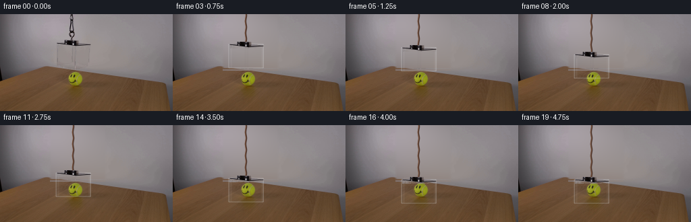
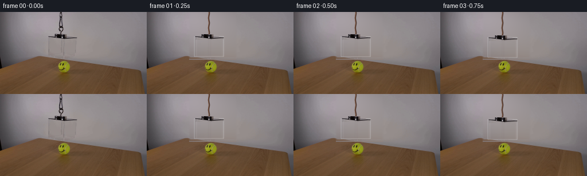
展开代码变化
--- 上一保存版本
+++ 本次保存版本
@@ -19,22 +19,38 @@
def make_clean_plate(source):
"""Rebuild the smooth studio wall behind the original suspended rig."""
plate = source.copy()
- # Interpolate across a generous central strip so the repair joins the
- # studio wall without a visible rectangular edge.
- for y in range(82):
- left = source[y, 63].astype(np.float32)
- right = source[y, 153].astype(np.float32)
- amount = np.linspace(0.0, 1.0, 88, dtype=np.float32)[:, None]
- row = left * (1.0 - amount) + right * amount
- plate[y, 64:152] = np.clip(np.rint(row), 0, 255).astype(np.uint8)
-
- # Preserve a trace of the source grain while suppressing the old rig.
- grain = (
- np.sin(np.arange(W) * 0.37 + np.arange(82)[:, None] * 0.23)
- + 0.5 * np.sin(np.arange(W) * 0.19 - np.arange(82)[:, None] * 0.41)
- ) * 0.18
- plate[0:82, 64:152] = np.clip(
- plate[0:82, 64:152].astype(np.float32) + grain[:, 64:152, None], 0, 255
+ # A low-order surface fit follows the soft studio falloff and avoids the
+ # rectangular seam produced by a one-dimensional background patch.
+ yy, xx = np.mgrid[0:H, 0:W]
+ object_area = (
+ ((xx >= 75) & (xx < 155) & (yy < 80))
+ | ((xx >= 100) & (xx < 117) & (yy < 49))
+ )
+ samples = (yy < 80) & ~object_area & (xx >= 18) & (xx < 232)
+ terms = []
+ for total in range(5):
+ for power in range(total + 1):
+ terms.append((xx ** (total - power)) * (yy**power))
+
+ design = np.stack([term[samples] for term in terms], axis=1).astype(np.float64)
+ fitted = []
+ for channel in range(3):
+ coef, *_ = np.linalg.lstsq(
+ design, source[..., channel][samples].astype(np.float64), rcond=None
+ )
+ fitted.append(np.stack(terms, axis=-1) @ coef)
+ fitted = np.stack(fitted, axis=-1)
+
+ alpha = np.zeros((H, W), dtype=np.float32)
+ alpha[0:80, 72:158] = 1.0
+ for x, value in ((72, 0.0), (73, 0.2), (74, 0.45), (75, 0.72), (76, 0.9)):
+ alpha[0:80, x] = value
+ for x, value in ((154, 0.9), (155, 0.72), (156, 0.45), (157, 0.2), (158, 0.0)):
+ alpha[0:80, x] = value
+ alpha[80:84, 74:156] = np.linspace(0.0, 1.0, 4, dtype=np.float32)[:, None]
+ alpha = alpha[..., None]
+ plate = np.clip(
+ source.astype(np.float32) * (1.0 - alpha) + fitted * alpha, 0, 255
).astype(np.uint8)
return plate
@@ -50,6 +66,13 @@
alpha = np.where(region, alpha, 0.0)
alpha = np.where(alpha > 0.06, alpha, 0.0)
return source.copy(), alpha.astype(np.float32)
+
+
+def polygon_mask(points, scale=SS):
+ image = Image.new("L", (W * scale, H * scale), 0)
+ draw = ImageDraw.Draw(image)
+ draw.polygon([(int(x * scale), int(y * scale)) for x, y in points], fill=255)
+ return np.asarray(image.resize((W, H), Image.Resampling.LANCZOS), dtype=np.float32) / 255.0
def line_mask(points, width=1.0, scale=SS):
@@ -107,6 +130,46 @@
return frame
+def render_acrylic(frame, dy):
+ top = 43.0 + dy
+ bottom = 78.0 + dy
+ left, right = 83.0, 134.0
+ front = [(left, top), (right, top), (right, bottom), (left, bottom)]
+ mask = polygon_mask(front)
+
+ frame = composite_color(frame, mask, (170, 178, 184), 0.018)
+ bands = [
+ (85.0, 87.5, (229, 234, 237), 0.052),
+ (106.5, 108.5, (92, 98, 103), 0.040),
+ (109.5, 112.0, (84, 91, 97), 0.035),
+ (131.0, 133.0, (232, 237, 239), 0.038),
+ ]
+ for x0, x1, color, opacity in bands:
+ band = polygon_mask(
+ [(x0, top + 0.6), (x1, top + 0.6), (x1, bottom - 0.4), (x0, bottom - 0.4)]
+ )
+ frame = composite_color(frame, band, color, opacity)
+
+ # Crisp rims and subtle glass thickness read clearly at the video's scale.
+ edges = [
+ ([(left, top), (right, top)], 0.42, 0.7),
+ ([(left, bottom), (right, bottom)], 0.32, 0.65),
+ ([(left, top), (left, bottom)], 0.38, 0.65),
+ ([(right, top), (right, bottom)], 0.42, 0.65),
+ ]
+ for points, opacity, width in edges:
+ frame = composite_color(
+ frame, line_mask(points, width), (232, 237, 240), opacity
+ )
+ frame = composite_color(
+ frame,
+ line_mask([(84.2, top + 0.5), (84.2, bottom - 0.5)], 0.55),
+ (67, 73, 79),
+ 0.22,
+ )
+ return frame
+
+
def render_contact_shadow(frame, dy):
if dy < 18:
return frame
@@ -123,11 +186,8 @@
assert source.shape == (H, W, 3)
clean = make_clean_plate(source)
- acrylic, acrylic_alpha = difference_alpha(
- source, clean, (41, 80, 82, 135), threshold=1.8, spread=10.0
- )
hardware, hardware_alpha = difference_alpha(
- source, clean, (40, 48, 82, 135), threshold=4.0, spread=12.0
+ source, clean, (39, 48, 82, 136), threshold=3.0, spread=12.0
)
frames = []
@@ -142,13 +202,7 @@
frame = clean.astype(np.float32)
frame = render_cord(frame, dy)
frame = render_contact_shadow(frame, dy)
- frame = composite_image(
- frame,
- acrylic.astype(np.float32),
- acrylic_alpha,
- dx=0,
- dy=int(round(dy)),
- )
+ frame = render_acrylic(frame, dy)
frame = composite_image(
frame,
hardware.astype(np.float32),
可观测工具轨迹
实际执行的命令与返回图片。
命令 1exit 0
/bin/bash -c "pwd && rg --files -g 'prompt.txt' -g 'GENERATION_RULES.md' -g '"'!node_modules'"' -g '"'!venv'"' | sort"
命令 2exit 0
/bin/bash -c "find . -maxdepth 2 -type f -printf '%p\\n' | sort | head -200"
命令 3exit 0
/bin/bash -c 'git status --short --branch'
命令 4exit 0
/bin/bash -c 'cat GENERATION_RULES.md'
命令 5exit 0
/bin/bash -c 'cat prompt.txt'
命令 6exit 0
/bin/bash -c "sed -n '1,240p' artifact_io.py && sed -n '1,240p' player_template.html"
命令 7exit 0
/bin/bash -c 'file first_frame.png && identify first_frame.png 2>/dev/null || true'
命令 8exit 0
/bin/bash -c "python - <<'PY'
from PIL import Image
im=Image.open('first_frame.png')
print(im.size, im.mode)
im.crop((65,0,160,125)).resize((760,1000)).save('.tmp/crop_scene.png')
PY"命令 9exit 0
/bin/bash -c "python - <<'PY'
from PIL import Image
im=Image.open('first_frame.png').convert('RGB')
for y in range(0,125,4):
row=[im.getpixel((x,y)) for x in (0,20,60,80,100,120,140,160,200,240,255)]
print(f'{y:3}', ' '.join(f'{r:02x}{g:02x}{b:02x}' for r,g,b in row))
PY"命令 10exit 0
/bin/bash -c "python - <<'PY'
from PIL import Image
im=Image.open('first_frame.png').convert('RGB')
im.crop((65,0,155,120)).resize((900,1200),Image.Resampling.NEAREST).save('.tmp/scene_nearest.png')
PY"命令 11exit 0
/bin/bash -c "python - <<'PY'
from PIL import Image
im=Image.open('first_frame.png').convert('RGB')
for y in (35,36,37,38,39,40,41,42,43,44,45,46,47,48,49,50,51,52,53,54,55,56,57,58,59,60,61,62,63,64,65,66,67,68,69,70,71,72,73,74,75,76,77,78,79,80):
# report colors around right edge 130..140
vals=[im.getpixel((x,y)) for x in range(128,141)]
print(y, vals)
PY"命令 12exit 0
/bin/bash -c "python - <<'PY'
from PIL import Image
im=Image.open('first_frame.png').convert('RGB')
for y in (44,45,46,55,65,75,80):
print('\\ny',y)
for x in range(70,160,2): print(f'{x}:{im.getpixel((x,y))}',end=' ')
PY"命令 13exit 0
/bin/bash -c "python - <<'PY'
from PIL import Image
im=Image.open('first_frame.png').convert('RGB')
for y in range(0,48,2):
print(y,[im.getpixel((x,y)) for x in range(108,116)])
PY"命令 14exit 0
/bin/bash -c "python - <<'PY' mods=['numpy','PIL','cv2','scipy'] for m in mods: try: x=__import__(m); print(m, getattr(x,'__version__','ok')) except Exception as e: print(m,'MISSING',e) PY"
命令 15exit 0
/bin/bash -c "python - <<'PY'
from PIL import Image
im=Image.open('first_frame.png').convert('RGB')
for y in range(0,42,2):
print(y, [(x,im.getpixel((x,y))) for x in range(108,118)])
PY"命令 16exit 0
/bin/bash -c "python - <<'PY'
from PIL import Image
im=Image.open('first_frame.png').convert('RGB')
for y in (43,44,45,46):
print(y,[im.getpixel((x,y)) for x in range(80,140)])
PY"命令 17exit 0
/bin/bash -c "python - <<'PY'
from PIL import Image
im=Image.open('first_frame.png').convert('RGB')
for y in range(38,44):
print(y, [(x, im.getpixel((x,y))) for x in range(103,114)])
PY"命令 18exit 0
/bin/bash -c "python - <<'PY'
from PIL import Image
im=Image.open('first_frame.png').convert('RGB')
for x in range(78,84):
print('x',x,[(y,im.getpixel((x,y))) for y in range(44,83,2)])
PY"命令 19exit 0
/bin/bash -c "python - <<'PY'
from PIL import Image
im=Image.open('first_frame.png').convert('RGB')
for y in range(0,42,2):
print(y, [(x,im.getpixel((x,y))) for x in range(106,112)])
PY"命令 20exit 0
/bin/bash -c "python - <<'PY'
from PIL import Image
im=Image.open('first_frame.png').convert('RGB')
for y in range(40,50):
print(y,[(x,im.getpixel((x,y))) for x in range(104,116)])
PY"命令 21exit 0
/bin/bash -c "python - <<'PY'
from PIL import Image
im=Image.open('first_frame.png').convert('RGB')
for x in range(70,150):
# print only coordinates of likely box edge dark pixels in y 42..80
vals=[im.getpixel((x,y)) for y in range(42,80)]
if sum(v[0]<100 for v in vals)>=4:
print(x,[(42+i,v) for i,v in enumerate(vals) if v[0]<100])
PY"命令 22exit 0
/bin/bash -c "python - <<'PY'
from PIL import Image
im=Image.open('first_frame.png').convert('RGB')
for y in range(38,44):
print('y',y,[(x,im.getpixel((x,y))) for x in range(72,88)])
PY"命令 23exit 0
/bin/bash -c "python - <<'PY'
from PIL import Image
im=Image.open('first_frame.png').convert('RGB')
for y in range(0,40,2):
print(y,[(x,im.getpixel((x,y))) for x in range(104,109)])
PY"命令 24exit 0
/bin/bash -c "python - <<'PY'
from PIL import Image
im=Image.open('first_frame.png').convert('RGB')
for y in range(40,48):
print('y',y,[(x,im.getpixel((x,y))) for x in range(78,92)])
PY"命令 25exit 0
/bin/bash -c "python - <<'PY'
from PIL import Image
im=Image.open('first_frame.png').convert('RGB')
# sample right vertical edge, should x=132-ish
for x in range(128,138):
print(x,[(y,im.getpixel((x,y))) for y in (46,50,55,60,65,70,75,78)])
PY"命令 26exit -1
/bin/bash -c "python - <<'PY'
from PIL import Image
im=Image.open('first_frame.png').convert('RGB')
# candidate left vertical edge x=84: compare each row to x=83/85 to see contrast
for y in range(40,80):
print(y, im.getpixel((83,y)), im.getpixel((84,y)), im.getpixel((85,y)))
PY"命令 27exit 0
/bin/bash -c "python - <<'PY'
from PIL import Image
im=Image.open('first_frame.png').convert('RGB')
for y in range(40,80):
print(y, im.getpixel((83,y)), im.getpixel((84,y)), im.getpixel((85,y)))
PY"命令 28exit 0
/bin/bash -c 'ls -la && (test -f task_spec.json && cat task_spec.json || true)'
命令 29exit 1
/bin/bash -c "python - <<'PY'
import cv2, numpy as np
from PIL import Image
src=np.array(Image.open('first_frame.png').convert('RGB'))
h,w=src.shape[:2]
mask=np.zeros((h,w),np.uint8)
# Suspended assembly including glass footprint and cord.
mask[0:82,81:139]=255
mask[0:47,103:112]=255
# inpaint
bg=cv2.inpaint(cv2.cvtColor(src,cv2.COLOR_RGB2BGR),mask,7,cv2.INPAINT_TELEA)
bg=cv2.cvtColor(bg,cv2.COLOR_BGR2RGB)
Image.fromarray(bg).save('.tmp/bg_inpaint.png')
# row-wise smooth reconstruction based on wall samples, with inpaint fallback for table boundary
bg2=src.copy().astype(np.float32)
for y in range(0,80):
clean=[]
for x in range(50,170):
if not (81<=x<139): clean.append(x)
xp=np.array(clean); vals=src[y,xp].astype(np.float32)
# robust quadratic fit, trim dark object remnants outside manual mask
lum=vals.mean(1); keep=lum>125
coef=np.polyfit(xp[keep],vals[keep],2)
xx=np.arange(81,139)
bg2[y,81:139]=np.polyval(coef,xx)
bg2=np.clip(bg2,0,255).astype(np.uint8)
Image.fromarray(bg2).save('.tmp/bg_poly.png')
PY"命令 30exit 0
/bin/bash -c 'python generate.py'
命令 31exit 0
/bin/bash -c "python - <<'PY'
from pathlib import Path
import numpy as np
from PIL import Image
import generate
src=np.array(Image.open('first_frame.png').convert('RGB'))
clean=generate.make_clean_plate(src)
Image.fromarray(clean).save('.tmp/clean_current.png')
hardware,alpha=generate.hardware_layer(src,clean)
Image.fromarray(np.clip(hardware*alpha[...,None],0,255).astype('uint8')).save('.tmp/hardware_rgb.png')
Image.fromarray((alpha*255).astype('uint8')).save('.tmp/hardware_alpha.png')
PY"命令 32exit 0
/bin/bash -c "python - <<'PY'
import numpy as np
from PIL import Image
im=np.array(Image.open('first_frame.png').convert('RGB')).astype(float)
# Fit planes separately to wall using only clean pixels. Report mean/error by polynomial order.
h,w=im.shape[:2]
y,x=np.mgrid[:h,:w]
mask=(y<79)&~((x>=78)&(x<142))&(x>40)&(x<180)
for order in (1,2,3,4,5):
# sklearn not assume; use combinations
terms=[]
for total in range(order+1):
for i in range(total+1):
terms.append((x**(total-i))*(y**i))
A=np.stack([t[mask] for t in terms],1)
fit=[]
for c in range(3):
coef=np.linalg.lstsq(A,im[...,c][mask],rcond=None)[0]
fit.append(np.stack([t for t in terms],-1)@coef)
fit=np.stack(fit,-1)
err=np.abs(fit[mask]-im[mask])
print(order, err.mean(), np.percentile(err,95))
PY"命令 33exit 0
/bin/bash -c "python - <<'PY'
import numpy as np
from PIL import Image
im=np.array(Image.open('first_frame.png').convert('RGB')).astype(float)
h,w=im.shape[:2]; y,x=np.mgrid[:h,:w]
mask=(y<79)&~((x>=76)&(x<142))&(x>35)&(x<185)
terms=[]
for total in range(6):
for i in range(total+1): terms.append((x**(total-i))*(y**i))
A=np.stack([t[mask] for t in terms],1)
fit=[]
for c in range(3):
coef=np.linalg.lstsq(A,im[...,c][mask],rcond=None)[0]
fit.append(np.stack(terms,-1)@coef)
fit=np.stack(fit,-1)
print('err',np.abs(fit[mask]-im[mask]).mean(),np.percentile(np.abs(fit[mask]-im[mask]),95))
clean=im.copy(); clean[:80,76:142]=fit[:80,76:142]
Image.fromarray(np.clip(clean,0,255).astype('uint8')).save('.tmp/clean_poly5.png')
PY"命令 34exit 0
/bin/bash -c "python - <<'PY'
import numpy as np
from PIL import Image
im=np.array(Image.open('first_frame.png').convert('RGB')).astype(float)
# compare row profiles outside/inside missing wall at select x
for x in (76,78,80,85,90,100,108,120,130,138,140,142):
print(x,[round(v) for v in im[40:80,x].mean(1)[::5]])
PY"命令 35exit 0
/bin/bash -c 'python generate.py'
命令 36exit 0
/bin/bash -c "python - <<'PY'
import numpy as np
from PIL import Image
import generate
s=np.array(Image.open('first_frame.png').convert('RGB'))
c=generate.make_clean_plate(s)
Image.fromarray(c).save('.tmp/clean_new.png')
PY"命令 37exit 0
/bin/bash -c "python - <<'PY'
import numpy as np
from PIL import Image
for name in ['first_frame.png','.tmp/clean_new.png']:
a=np.array(Image.open(name).convert('RGB'))
print(name)
for y in (0,10,20,30,40,50,60,70,78):
print(y,a[y,78],a[y,108],a[y,147])
PY"命令 38exit 0
/bin/bash -c "python - <<'PY'
import numpy as np
from PIL import Image
a=np.array(Image.open('first_frame.png').convert('RGB'))
for y in (76,77,78,79,80):
print(y,[(x,tuple(a[y,x])) for x in (72,74,76,78,80,82,100,108,120,140,142,144,146,148,150)])
PY"命令 39exit 0
/bin/bash -c "python - <<'PY'
from PIL import Image
im=Image.open('first_frame.png').convert('RGB')
im.crop((72,36,145,87)).resize((1168,816),Image.Resampling.NEAREST).save('.tmp/box_nearest.png')
PY"命令 40exit 0
/bin/bash -c "python - <<'PY'
import numpy as np
from PIL import Image
a=np.array(Image.open('first_frame.png').convert('RGB'))
# local gradient magnitude to identify outer contour
for y in (42,43,44,45,46,47,48,50,55,60,65,70,75,78,79):
vals=[]
for x in range(76,143):
vals.append((x,round(float(a[y,x].mean()))))
print(y,vals)
PY"命令 41exit 0
/bin/bash -c 'python generate.py'
命令 42exit 0
/bin/bash -c "python - <<'PY'
import numpy as np
from PIL import Image
import generate
s=np.array(Image.open('first_frame.png').convert('RGB'))
c=generate.make_clean_plate(s)
box,alpha=generate.difference_alpha(s,c,(41,80,82,135),1.8,10)
Image.fromarray((alpha*255).astype('uint8')).save('.tmp/acr_alpha.png')
Image.fromarray(np.clip(box*alpha[...,None],0,255).astype('uint8')).save('.tmp/acr_rgb.png')
Image.fromarray(c).save('.tmp/clean_latest.png')
PY"命令 43exit 0
/bin/bash -c "python - <<'PY'
import numpy as np
from PIL import Image
s=np.array(Image.open('first_frame.png').convert('RGB')).astype(int)
c=np.array(Image.open('.tmp/clean_latest.png')).astype(int)
for x in (64,70,78,82,84,86,90,100,108,120,130,134,140,150,152):
print(x, np.abs(s[:82,x]-c[:82,x]).max(1).mean(),np.percentile(np.abs(s[:82,x]-c[:82,x]).max(1),90))
PY"命令 44exit 0
/bin/bash -c "python - <<'PY'
import numpy as np
from PIL import Image
s=np.array(Image.open('first_frame.png').convert('RGB')).astype(int)
c=np.array(Image.open('.tmp/clean_latest.png')).astype(int)
for y in (44,45,46,47,50,60,70,78,79,80):
print(y, [(x,tuple(s[y,x]),int(np.abs(s[y,x]-c[y,x]).max())) for x in (82,83,84,85,86,90,100,108,110,120,130,132,133,134,135)])
PY"命令 45exit 0
/bin/bash -c "python - <<'PY'
import numpy as np
from PIL import Image
s=np.array(Image.open('first_frame.png').convert('RGB')).astype(float)
# print robust linear fit/interpolation at key x rows
for y in (0,20,40,46,50,60,70,76,78,79,80):
left=s[y,70].copy(); right=s[y,150].copy()
print(y, 'L',left.round().astype(int), 'R',right.round().astype(int))
PY"命令 46exit 0
/bin/bash -c "sed -n '1,280p' generate.py"
命令 47exit 0
/bin/bash -c 'ls -lh pixels.npz frames/*.png inspection.png transition_check.png index.html 2>/dev/null | tail -30'
命令 48exit 0
/bin/bash -c "python - <<'PY'
import numpy as np
from PIL import Image
z=np.load('pixels.npz')['pixels']
print('pixels',z.shape,z.dtype)
# unpack channel-major packed frame stack
v=z
rgb=np.stack(((v>>16)&255,(v>>8)&255,v&255),axis=-1)
print('rgb shape',rgb.shape,'first match',np.array_equal(rgb[:,:,0],np.array(Image.open('first_frame.png').convert('RGB'))))
for i in [0,1,5,10,15,19]:
a=rgb[:,:,i]
print(i, a.mean((0,1)).round(2), a.std().round(2))
PY"命令 49exit 0
/bin/bash -c "python - <<'PY'
import numpy as np
from PIL import Image
a=np.array(Image.open('first_frame.png').convert('RGB')).astype(float)
# wall interpolation candidate using local rows and difference from current fitted wall
for y in (20,40,46,60,76):
x=np.array([55,60,64,70,75,152,160,165,170])
rgb=a[y,x]
# local linear color fit, predict x 78..150
pred=[]
for c in range(3): pred.append(np.interp(np.arange(78,151),x,rgb[:,c]))
print(y, np.stack(pred,1)[[0,30,44,72]].round().astype(int))
PY"命令 50exit 0
/bin/bash -c "python - <<'PY'
import numpy as np
from PIL import Image
s=np.array(Image.open('first_frame.png').convert('RGB')).astype(np.float32)
for y in (0,20,40,46,60,70,76):
xp=np.array([45,50,55,60,64,68,72,75,76,150,153,160,165,170,180])
vals=s[y,xp]
print(y, [(int(x),tuple(v.astype(int))) for x,v in zip(xp,vals)])
PY"命令 51exit 0
/bin/bash -c "python - <<'PY'
import numpy as np
from PIL import Image
im=np.array(Image.open('first_frame.png').convert('RGB')).astype(float)
# test a smooth 2d surface fit using only the clean background. report predictions at known clean wall locations
h,w=im.shape[:2]; y,x=np.mgrid[:h,:w]
mask=(y<77)&~((x>=76)&(x<152))&(x>=25)&(x<190)
for order in (2,3,4,5,6):
terms=[]
for total in range(order+1):
for i in range(total+1): terms.append((x**(total-i))*(y**i))
A=np.stack([t[mask] for t in terms],1)
preds=[]
for c in range(3):
coef=np.linalg.lstsq(A,im[...,c][mask],rcond=None)[0]
preds.append(np.stack(terms,-1)@coef)
pred=np.stack(preds,-1)
err=np.abs(pred[mask]-im[mask])
# predictions at missing region x 84,108,134 at rows
print('order',order,'err',round(err.mean(),2), 'pred',pred[20,108].round().astype(int),pred[40,108].round().astype(int),pred[60,108].round().astype(int))
PY"命令 52exit 1
/bin/bash -c "python - <<'PY'
import numpy as np
from PIL import Image
im=np.array(Image.open('first_frame.png').convert('RGB')).astype(float)
h,w=im.shape[:2]; y,x=np.mgrid[:h,:w]
# test row-specific quadratic on each side with smooth blending
# left sample x 45..76, right x 150..180
predict=np.zeros_like(im)
for yy in range(77):
xp=np.r_[np.arange(42,77),np.arange(150,183)]
vals=im[yy,xp]
xx=np.arange(77,150)
# cubic fit in x across whole row (wall appears smooth except shading)
co=np.polyfit(xp,vals,3)
predict[yy,77:150]=np.polyval(co,xx)
mask=(y<77)&~((x>=76)&(x<152))&(x>=30)&(x<190)
err=np.abs(predict[mask]-im[mask])
print(err.mean(),np.percentile(err,95))
# print output samples
for yy in (0,20,40,60,76): print(yy,predict[yy,84].round(),predict[yy,108].round(),predict[yy,134].round())
Image.fromarray(np.clip(np.where((y<77)&(x>=77)&(x<150),predict,im),0,255).astype('uint8')).save('.tmp/clean_rowcubic.png')
PY"命令 53exit 0
/bin/bash -c "python - <<'PY'
import numpy as np
from PIL import Image
im=np.array(Image.open('first_frame.png').convert('RGB')).astype(float)
h,w=im.shape[:2]; y,x=np.mgrid[:h,:w]
predict=im.copy()
for yy in range(77):
xp=np.r_[np.arange(42,77),np.arange(150,183)]
vals=im[yy,xp]
xx=np.arange(77,150)
pred=[]
for c in range(3):
co=np.polyfit(xp,vals[:,c],3)
pred.append(np.polyval(co,xx))
predict[yy,77:150]=np.stack(pred,1)
mask=(y<77)&~((x>=76)&(x<152))&(x>=30)&(x<190)
err=np.abs(predict[mask]-im[mask])
print(err.mean(),np.percentile(err,95))
for yy in (0,20,40,60,76): print(yy,predict[yy,84].round(),predict[yy,108].round(),predict[yy,134].round())
Image.fromarray(np.clip(predict,0,255).astype('uint8')).save('.tmp/clean_rowcubic.png')
PY"命令 54exit 0
/bin/bash -c "python - <<'PY'
import numpy as np
from PIL import Image
im=np.array(Image.open('first_frame.png').convert('RGB')).astype(float)
# For each y compare source x 70..76 against linear interpolation x 64..153.
for y in (0,10,20,30,40,45,50,60,70,76,77,78):
src=im[y,70:77]
a=im[y,64]; b=im[y,153]
t=(np.arange(70,77)-64)/89
lin=a*(1-t[:,None])+b*t[:,None]
print(y, np.abs(src-lin).mean().round(2), src.mean(1).round().astype(int), lin.mean(1).round().astype(int))
PY"命令 55exit 0
/bin/bash -c "python - <<'PY'
import cv2, numpy as np
from PIL import Image
im=cv2.imread('first_frame.png')
crop=im[35:88,75:143]
lab=cv2.cvtColor(crop,cv2.COLOR_BGR2LAB)
l=lab[:,:,0]
clahe=cv2.createCLAHE(clipLimit=2.5,tileGridSize=(4,4)).apply(l)
lab[:,:,0]=clahe
out=cv2.cvtColor(lab,cv2.COLOR_LAB2BGR)
out=cv2.resize(out,None,fx=12,fy=12,interpolation=cv2.INTER_NEAREST)
cv2.imwrite('.tmp/box_contrast.png',out)
PY"命令 56exit 0
/bin/bash -c "python - <<'PY'
import cv2,numpy as np
from PIL import Image
a=cv2.imread('first_frame.png')
g=cv2.cvtColor(a,cv2.COLOR_BGR2GRAY)
# find edges with canny
e=cv2.Canny(g,15,45)
cv2.imwrite('.tmp/edges.png',e)
# lines
lines=cv2.HoughLinesP(e,1,np.pi/180,threshold=10,minLineLength=8,maxLineGap=3)
for l in (lines[:,0] if lines is not None else []):
x1,y1,x2,y2=l
if 75<=x1<=140 and 75<=x2<=140 and 35<=y1<=85 and 35<=y2<=85: print(l)
PY"命令 57exit 0
/bin/bash -c "python - <<'PY'
from PIL import Image
im=Image.open('first_frame.png').convert('RGB')
im.crop((92,0,126,50)).resize((680,1000),Image.Resampling.NEAREST).save('.tmp/cord_nearest.png')
PY"命令 58exit 0
/bin/bash -c "python - <<'PY'
import numpy as np
from PIL import Image
s=np.array(Image.open('first_frame.png').convert('RGB')).astype(np.float32)
# fit smooth row interpolation using clean left (60..75) and right (154..168), quadratic each row, blend predictions
c=s.copy()
for y in range(77):
xl=np.arange(58,76); xr=np.arange(154,170); xx=np.arange(76,154)
pl=[];pr=[]
for ch in range(3):
cl=np.polyfit(xl,s[y,xl,ch],2); cr=np.polyfit(xr,s[y,xr,ch],2)
pl.append(np.polyval(cl,xx)); pr.append(np.polyval(cr,xx))
pl=np.stack(pl,1);pr=np.stack(pr,1)
# sigmoid blend, source wall slopes differently each side
t=np.linspace(0,1,len(xx))[:,None];t=t*t*(3-2*t)
c[y,76:154]=pl*(1-t)+pr*t
# blend row 76 into row77 by preserving row 77 mostly
Image.fromarray(np.clip(c,0,255).astype('uint8')).save('.tmp/clean_quadblend.png')
PY"命令 59exit 0
/bin/bash -c "python - <<'PY' import numpy as np from PIL import Image for p in ['.tmp/clean_quadblend.png','.tmp/clean_rowcubic.png','.tmp/clean_latest.png']: a=np.array(Image.open(p)).astype(int) print(p, 'left edge diff',np.abs(a[:76,75]-a[:76,76]).max(), 'right edge',np.abs(a[:76,153]-a[:76,154]).max()) PY"
命令 60exit 0
/bin/bash -c "python - <<'PY'
import numpy as np
from PIL import Image
s=np.array(Image.open('first_frame.png').convert('RGB')).astype(float)
# inspect wall row continuity with a cubic fitted on clean wall pixels each row, skipping all box x 76..154
pred=s.copy()
for y in range(77):
xp=np.r_[np.arange(30,77),np.arange(154,205)]
xx=np.arange(77,154)
vals=s[y,xp]
out=[]
for c in range(3):
co=np.polyfit(xp,vals[:,c],4)
out.append(np.polyval(co,xx))
pred[y,77:154]=np.stack(out,1)
Image.fromarray(np.clip(pred,0,255).astype('uint8')).save('.tmp/clean_rowquart.png')
# report fit at clean left/right and slope
for y in (20,40,60,76):
print(y,pred[y,77].round().astype(int),s[y,76].round().astype(int),pred[y,153].round().astype(int),s[y,154].round().astype(int))
PY"命令 61exit 0
/bin/bash -c "python - <<'PY'
import numpy as np
from PIL import Image
s=np.array(Image.open('first_frame.png').convert('RGB')).astype(float)
# fit each row with constrained cubic to exact boundary colors (blend two endpoint-preserving interpolations)
out=s.copy()
for y in range(77):
xl=np.arange(40,77); xr=np.arange(154,191); xx=np.arange(77,154)
# local linear values
for ch in range(3):
lv=np.interp(xx,xl,s[y,xl,ch]); rv=np.interp(xx,xr,s[y,xr,ch])
t=np.linspace(0,1,len(xx)); t=t*t*(3-2*t)
out[y,77:154,ch]=lv*(1-t)+rv*t
Image.fromarray(np.clip(out,0,255).astype('uint8')).save('.tmp/clean_linblend.png')
PY"命令 62exit 0
/bin/bash -c "python - <<'PY'
import numpy as np
from PIL import Image
s=np.array(Image.open('first_frame.png').convert('RGB')).astype(float)
# cubic fit with many points left and right but equal density and light ridge regularization via SVD
out=s.copy()
for y in range(77):
xp=np.r_[np.arange(20,77),np.arange(154,211)]; xx=np.arange(77,154)
for ch in range(3):
co=np.polyfit(xp,s[y,xp,ch],5)
out[y,77:154,ch]=np.polyval(co,xx)
Image.fromarray(np.clip(out,0,255).astype('uint8')).save('.tmp/clean_rowquint.png')
PY"命令 63exit 0
/bin/bash -c "python - <<'PY'
import numpy as np
from PIL import Image
s=np.array(Image.open('first_frame.png').convert('RGB')).astype(float)
for y in (0,20,40,60,76):
print('\\ny',y)
for x in (60,70,76,77,84,90,100,108,120,130,140,150,153,154,160):
print(x,tuple(s[y,x].astype(int)),end=' ')
PY"命令 64exit 0
/bin/bash -c "python - <<'PY'
import numpy as np
from PIL import Image
s=np.array(Image.open('first_frame.png').convert('RGB')).astype(float)
# endpoint cubic Hermite using boundary values and derivative from clean pixels.
out=s.copy()
for y in range(77):
x0,x1=76,154
p0=s[y,x0]; p1=s[y,x1]
m0=(s[y,72:77].mean(0)-s[y,68:73].mean(0))*4
m1=(s[y,154:159].mean(0)-s[y,150:155].mean(0))*4
xx=np.arange(x0+1,x1)
t=(xx-x0)/(x1-x0); t=t[:,None]
h00=2*t**3-3*t**2+1; h10=t**3-2*t**2+t; h01=-2*t**3+3*t**2; h11=t**3-t**2
out[y,x0+1:x1]=h00*p0+h10*(x1-x0)*m0+h01*p1+h11*(x1-x0)*m1
Image.fromarray(np.clip(out,0,255).astype('uint8')).save('.tmp/clean_hermite.png')
PY"命令 65exit 0
/bin/bash -c "python - <<'PY' import numpy as np from PIL import Image for p in ['.tmp/clean_hermite.png','.tmp/clean_latest.png']: a=np.array(Image.open(p)).astype(float) # derivative y mean, edge sharpness print(p,'xgrad',np.abs(np.diff(a[:76,64:152].mean(2),axis=1)).mean(),'ygrad',np.abs(np.diff(a[:76,64:152].mean(2),axis=0)).mean()) PY"
命令 66exit 0
/bin/bash -c "python - <<'PY'
import cv2, numpy as np
from PIL import Image
s=np.array(Image.open('first_frame.png').convert('RGB'))
h,w=s.shape[:2]; y,x=np.mgrid[:h,:w]
# fit polynomial wall excluding all rig/cord, using rows 0:78
obj=((x>=76)&(x<154)&(y<78)) | ((x>=102)&(x<116)&(y<48))
mask=(y<78)&(~obj)&(x>=15)&(x<235)
terms=[]
for total in range(5):
for i in range(total+1): terms.append((x**(total-i))*(y**i))
A=np.stack([t[mask] for t in terms],1)
bg=s.astype(float).copy()
pred=[]
for c in range(3):
co=np.linalg.lstsq(A,s[...,c][mask],rcond=None)[0]
pred.append(np.stack(terms,-1)@co)
pred=np.stack(pred,-1)
# fill wall and blend at boundaries x 70..80 and 150..160
fill=(y<78)&(x>=74)&(x<156)
alpha=np.ones((h,w),float)
for xx in range(74,82): alpha[:,xx]=np.linspace(0,1,8)[xx-74]
for xx in range(148,156): alpha[:,xx]=np.linspace(1,0,8)[xx-148]
alpha*=fill
bg=bg*(1-alpha[...,None])+pred*alpha[...,None]
bg=np.clip(bg,0,255).astype(np.uint8)
# inpaint lower rim region y76:83 x80:140
mask2=np.zeros((h,w),np.uint8)
mask2[75:84,78:142]=255
mask2[78:84,:78]=0
# protect ball; ball starts y87
bg2=cv2.inpaint(cv2.cvtColor(bg,cv2.COLOR_RGB2BGR),mask2,4,cv2.INPAINT_TELEA)
bg2=cv2.cvtColor(bg2,cv2.COLOR_BGR2RGB)
Image.fromarray(bg2).save('.tmp/clean_poly4_inpaint.png')
# compute alpha based on difference
diff=np.max(np.abs(s.astype(int)-bg2.astype(int)),2).astype(float)
face=(y>=39)&(y<=82)&(x>=80)&(x<=137)
# edges explicit
edge=np.zeros((h,w),float)
edge[41:47,82:136]=1
edge[44:81,82:87]=1
edge[44:81,130:136]=1
edge[76:82,82:136]=1
# face alpha diff
fa=np.clip((diff-4)/14,0,.65)*face
# suppress face interior where difference very low
fa=np.where(diff>3,fa,0)
al=np.maximum(edge*0.78,fa)
# hardware mask
hard=np.zeros((h,w),float)
hard[39:49,82:136]=1
hard[0:40,104:113]=0
# create frame shifted 38
for idx,dy in [(1,2),(5,10),(10,22),(15,38),(19,38)]:
clean=bg2.astype(float)
# cord draw
yy,xx=np.mgrid[:h,:w]
active=yy<(40+dy)
center=108+0.55*np.sin((yy+3)*.36)
dist=np.abs(xx-center)
core=np.clip(1.7-dist,0,1)*active
glint=np.clip(1-np.abs(xx-(center-.6)),0,1)*active
a=core[...,None]*.9; clean=clean*(1-a)+np.array([70,47,38])*a
a=glint[...,None]*.45; clean=clean*(1-a)+np.array([157,102,67])*a
# shift alpha layers
for lay,al2 in [(s.astype(float),al),(s.astype(float),hard)]:
sy0,sy1=max(0,-dy),min(h,h-dy); sx0,sx1=max(0,-0),min(w,w)
rgb=np.zeros_like(lay); aa=np.zeros_like(al2)
rgb[sy0+dy:sy1+dy]=lay[sy0:sy1]
aa[sy0+dy:sy1+dy]=al2[sy0:sy1]
# restrict acrylic to box region; hardware full
clean=clean*(1-aa[...,None])+rgb*aa[...,None]
Image.fromarray(np.clip(clean,0,255).astype(np.uint8)).save(f'.tmp/test_{idx:02d}.png')
PY"命令 67exit 0
/bin/bash -c "python - <<'PY'
import numpy as np
from PIL import Image
a=np.array(Image.open('first_frame.png').convert('RGB')).astype(int)
for y in range(38,48):
print(y,[(x,tuple(a[y,x])) for x in range(104,114)])
PY"命令 68exit 0
/bin/bash -c "python - <<'PY'
import numpy as np
from PIL import Image
s=np.array(Image.open('first_frame.png').convert('RGB')).astype(int)
for x in (83,84,85,86,88,90,100,107,108,109,110,112,120,130,131,132,133,134):
print('x',x,'darkcount',np.sum(s[46:76,x].mean(1)<100),'mean',s[46:76,x].mean(0).round().astype(int))
PY"命令 69exit 0
/bin/bash -c "python - <<'PY'
import numpy as np
from PIL import Image
s=np.array(Image.open('first_frame.png').convert('RGB')).astype(float)
# Compare each box interior pixel to reconstructed wall row interpolation.
# Box faces appear as slight dark/light residual; print residual map stats by x.
# derive row interpolated wall using clean edges
w=s.copy()
for y in range(77):
l=s[y,70]; r=s[y,155]
t=np.linspace(0,1,256)
w[y]=l*(1-t[:,None])+r*t[:,None]
res=(s-w).mean(2)
for x in range(80,138,2):
print(x,round(res[46:76,x].mean(),1),round(res[46:76,x].std(),1),end=' | ')
PY"命令 70exit 0
/bin/bash -c "python - <<'PY'
import numpy as np
from PIL import Image
s=np.array(Image.open('first_frame.png').convert('RGB')).astype(float)
# compute exact source clean wall from top rows via 2D low-pass? Print region visual residual on amplified version.
# use the rowcubic wall fit then residual inside x76:154,y44:76
import cv2
w=s.copy()
for y in range(77):
xp=np.r_[np.arange(35,77),np.arange(154,196)];xx=np.arange(77,154)
for c in range(3):
co=np.polyfit(xp,s[y,xp,c],4);w[y,77:154,c]=np.polyval(co,xx)
res=np.abs(s-w).max(2)
r=np.zeros_like(s);r[:,:,0]=np.clip(res*4,0,255)
r[:,:,1]=np.clip(res*1.5,0,255)
Image.fromarray(r.astype('uint8')).save('.tmp/residual.png')
PY"命令 71exit 0
/bin/bash -c "python - <<'PY'
import numpy as np
from PIL import Image
s=np.array(Image.open('first_frame.png').convert('RGB')).astype(float)
w=s.copy()
for y in range(77):
xp=np.r_[np.arange(35,77),np.arange(154,196)];xx=np.arange(77,154)
for c in range(3):
co=np.polyfit(xp,s[y,xp,c],4);w[y,77:154,c]=np.polyval(co,xx)
# residual map is box only; alpha using magnitude but with edge enforcement
res=np.abs(s-w).max(2)
a=np.clip((res-1.3)/7,0,1)
a[:43]=0;a[77:]=0;a[:,:82]=0;a[:,134:]=0
# ensure outer box edges and lid
a[42:47,83:135]=np.maximum(a[42:47,83:135],.8)
a[45:77,83:86]=np.maximum(a[45:77,83:86],.65)
a[45:77,131:135]=np.maximum(a[45:77,131:135],.65)
a[75:78,83:135]=np.maximum(a[75:78,83:135],.55)
Image.fromarray((a*255).astype('uint8')).save('.tmp/alpha_manual.png')
Image.fromarray(np.clip(s*a[...,None],0,255).astype('uint8')).save('.tmp/rgb_manual.png')
PY"命令 72exit 0
/bin/bash -c "python - <<'PY'
import numpy as np
from PIL import Image
s=np.array(Image.open('first_frame.png').convert('RGB')).astype(float)
# evaluate simple ideal smooth wall: per-row quadratic of pixels 30:77 and 154:205
w=s.copy()
for y in range(77):
xp=np.r_[np.arange(30,77),np.arange(154,205)]; xx=np.arange(77,154)
for c in range(3):
co=np.polyfit(xp,s[y,xp,c],2);w[y,77:154,c]=np.polyval(co,xx)
res=np.abs(s-w).max(2)
# print row/col alpha
for y in (44,45,46,47,50,60,70,75,76):
print(y,[(x,int(res[y,x])) for x in range(82,136,4)])
PY"命令 73exit 0
/bin/bash -c 'python generate.py'
命令 74exit 0
/bin/bash -c "python - <<'PY'
import numpy as np
from PIL import Image
import generate
s=np.array(Image.open('first_frame.png').convert('RGB'))
c=generate.make_clean_plate(s)
Image.fromarray(c).save('.tmp/clean_final.png')
h,a=generate.difference_alpha(s,c,(39,48,82,136),3,12)
Image.fromarray((a*255).astype('uint8')).save('.tmp/hard_final.png')
PY"命令 75exit 0
/bin/bash -c 'python generate.py && sha256sum pixels.npz frames/00.png frames/19.png'
命令 76exit 0
/bin/bash -c "python - <<'PY'
from pathlib import Path
import hashlib
import numpy as np
from PIL import Image
z=np.load('pixels.npz')['pixels']
assert z.shape==(144,256,20) and z.dtype==np.uint32
rgb=np.stack(((z>>16)&255,(z>>8)&255,z&255),axis=-1).transpose(2,0,1,3)
src=np.array(Image.open('first_frame.png').convert('RGB'))
assert rgb.shape==(20,144,256,3)
assert np.array_equal(rgb[0],src)
assert np.array_equal(rgb[-1],rgb[-2])
# Validate stored PNGs and browser payload count.
for i in range(20):
a=np.array(Image.open(f'frames/{i:02d}.png').convert('RGB'))
assert np.array_equal(a,rgb[i]),i
h=hashlib.sha256(Path('pixels.npz').read_bytes()).hexdigest()
print('shape',rgb.shape,'dtype',rgb.dtype)
print('first_frame_exact',np.array_equal(rgb[0],src))
print('final_hold_exact',np.array_equal(rgb[-1],rgb[-2]))
print('pixel_sha256',h)
print('png_validation','20/20')
print('index_bytes',Path('index.html').stat().st_size)
PY"视觉工具实际返回图片 1
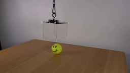
视觉工具实际返回图片 2
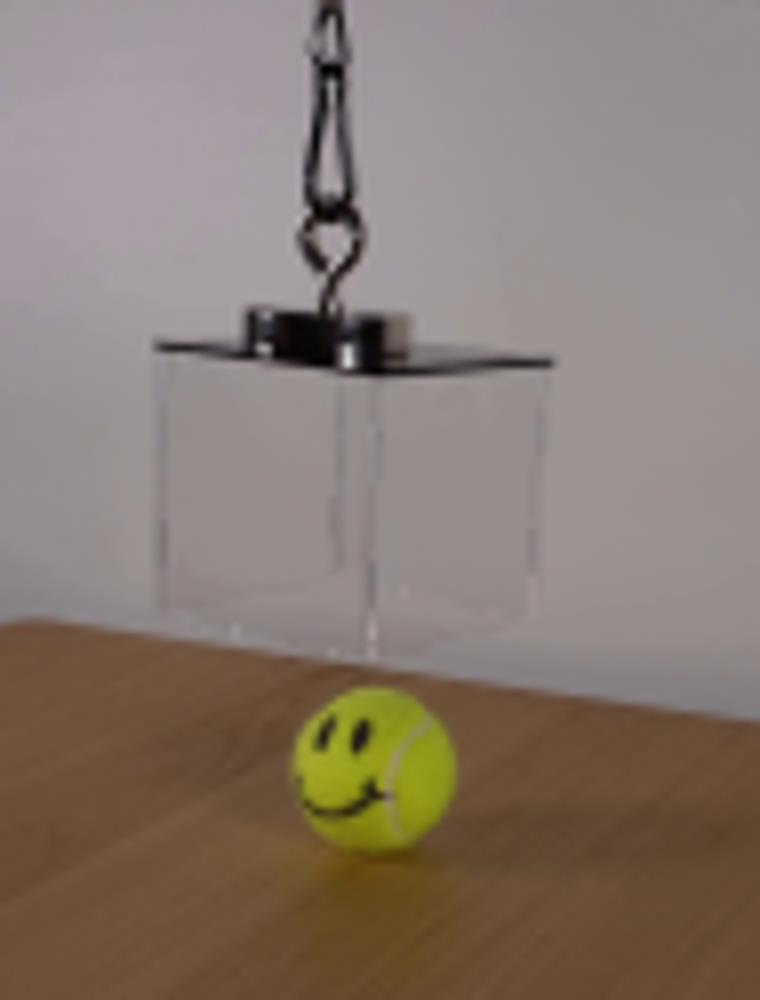
视觉工具实际返回图片 3
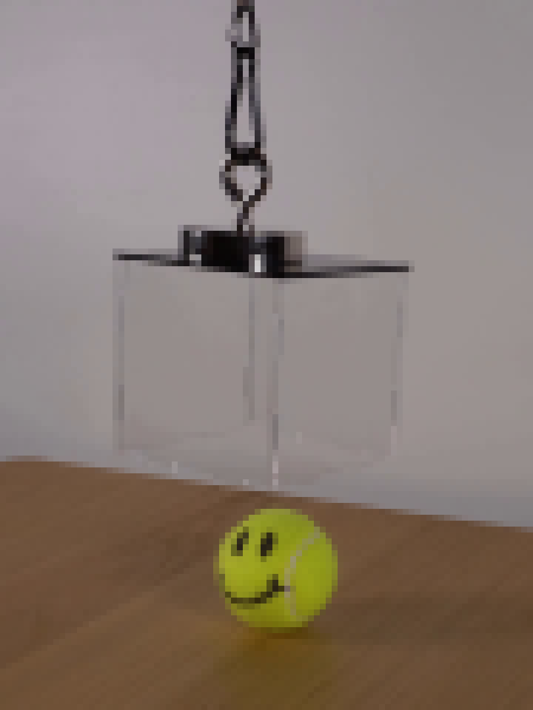
视觉工具实际返回图片 4
视觉工具实际返回图片 5

视觉工具实际返回图片 6
视觉工具实际返回图片 7
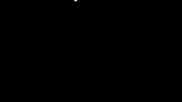
视觉工具实际返回图片 8
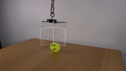
视觉工具实际返回图片 9
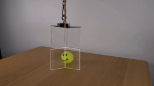
视觉工具实际返回图片 10
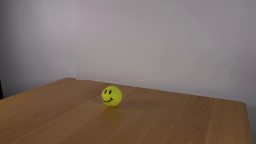
视觉工具实际返回图片 11
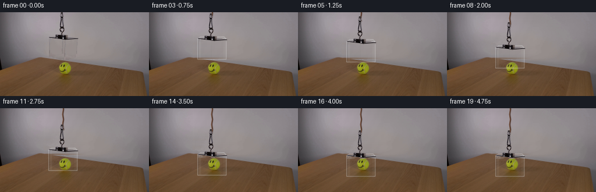
视觉工具实际返回图片 12
视觉工具实际返回图片 13
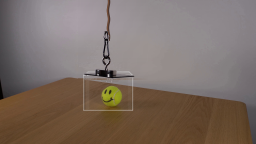
视觉工具实际返回图片 14
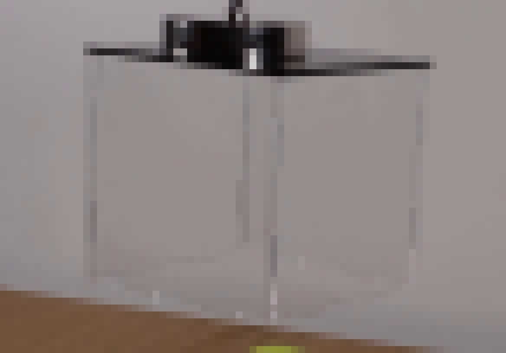
视觉工具实际返回图片 15

视觉工具实际返回图片 16
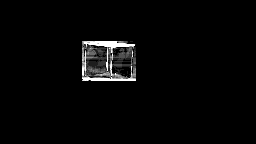
视觉工具实际返回图片 17
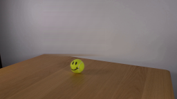
视觉工具实际返回图片 18
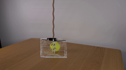
视觉工具实际返回图片 19

视觉工具实际返回图片 20
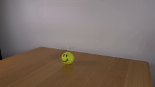
视觉工具实际返回图片 21
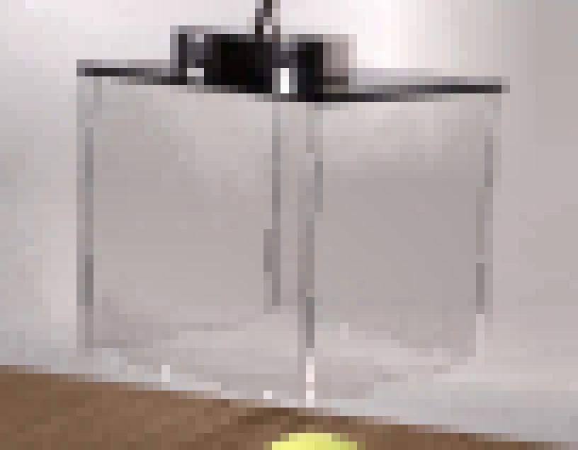
视觉工具实际返回图片 22
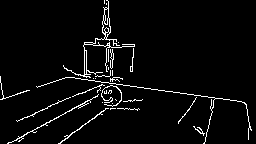
视觉工具实际返回图片 23
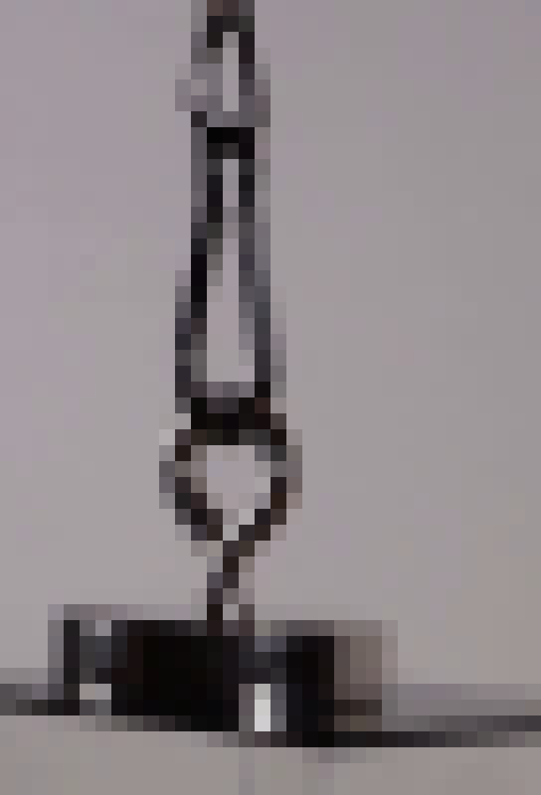
视觉工具实际返回图片 24
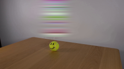
视觉工具实际返回图片 25
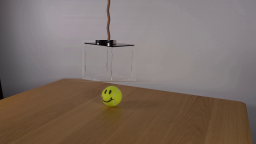
视觉工具实际返回图片 26
视觉工具实际返回图片 27
视觉工具实际返回图片 28
视觉工具实际返回图片 29
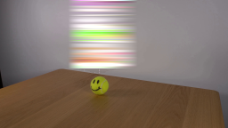
视觉工具实际返回图片 30
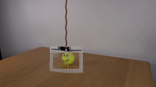
视觉工具实际返回图片 31
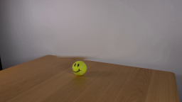
视觉工具实际返回图片 32
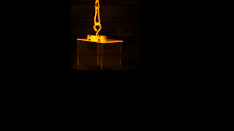
视觉工具实际返回图片 33
视觉工具实际返回图片 34

视觉工具实际返回图片 35
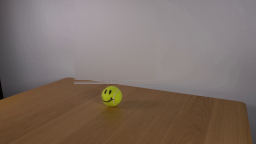
视觉工具实际返回图片 36
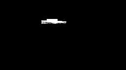
视觉工具实际返回图片 37
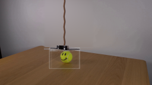
保存候选 4 份；完成命令 76 次；可验证图片返回 37 张。原始 API 响应与完整日志保留在本地。